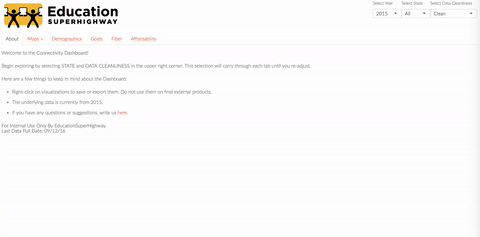
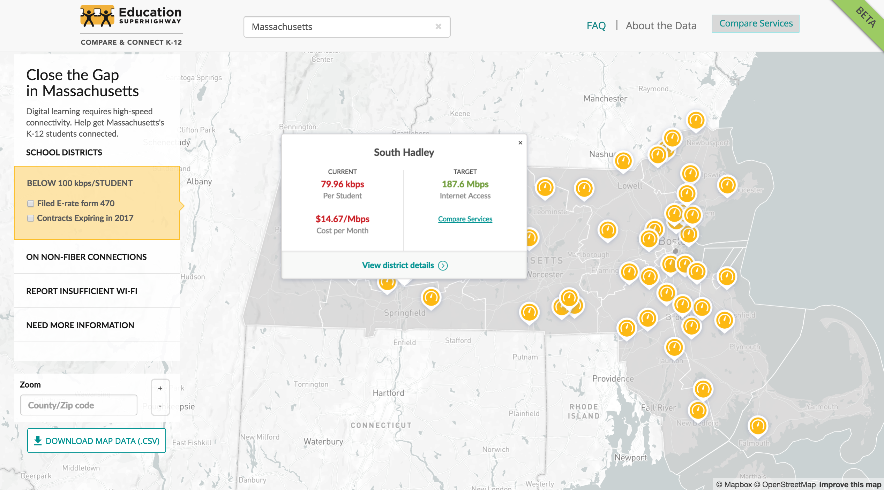
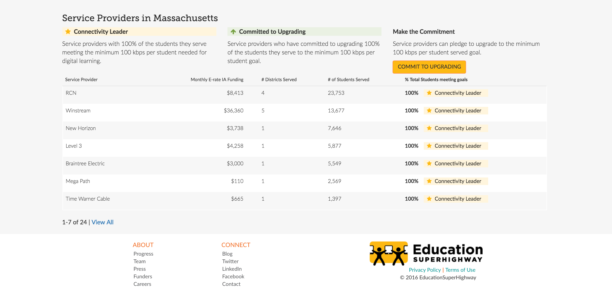
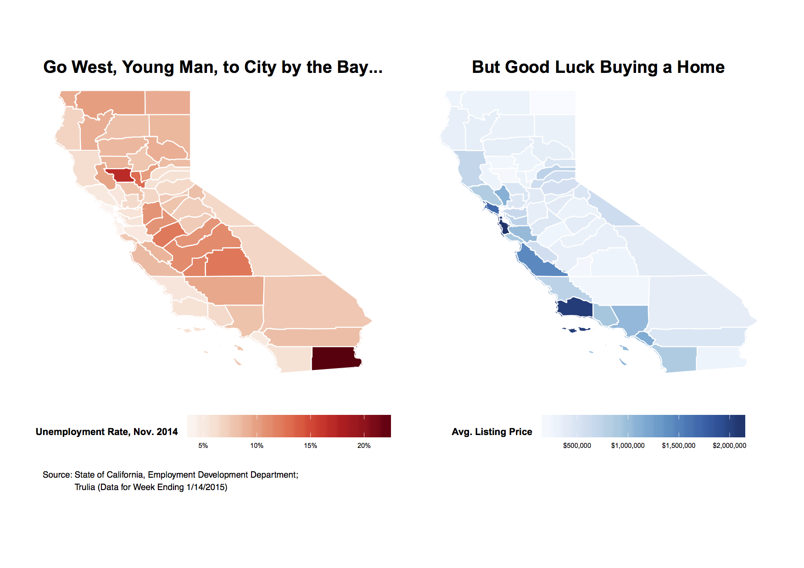
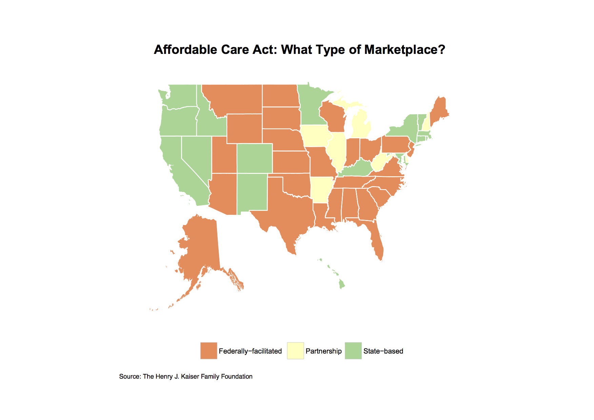
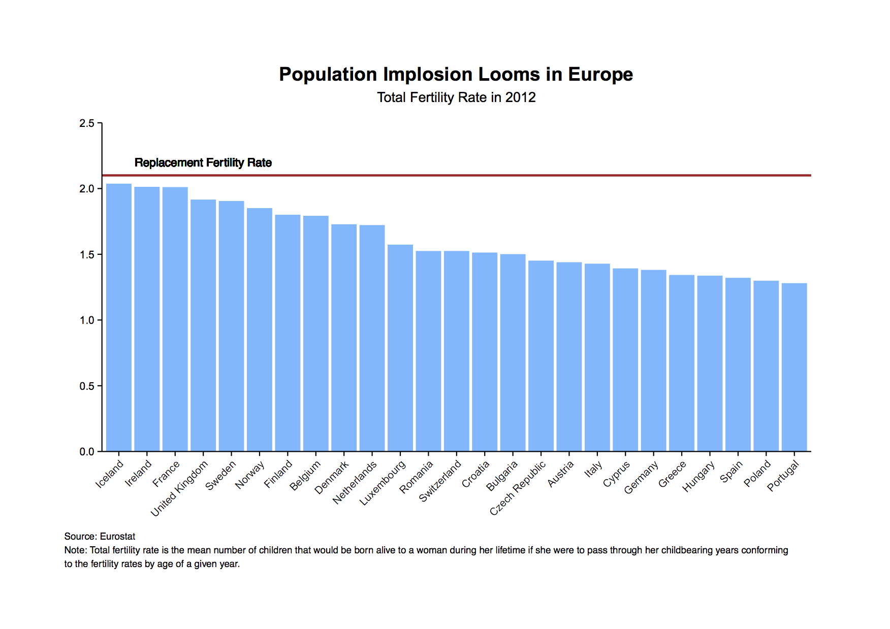
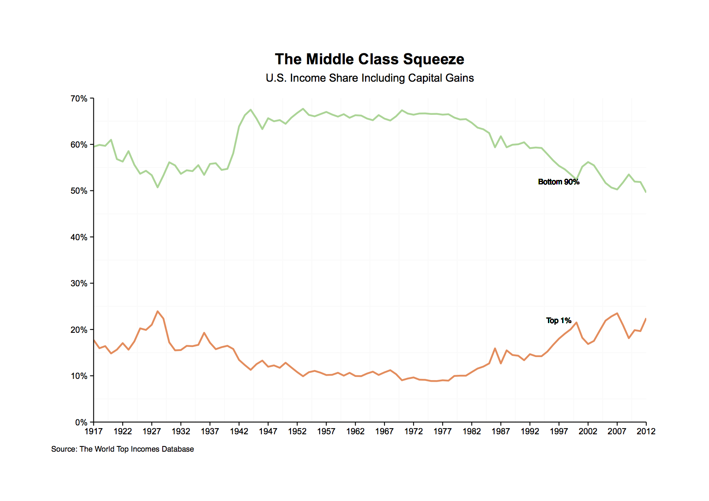

I am an education + data enthusiast who is always learning and occasionally traveling. Originally from South Korea I now call various places my home. I studied International Relations at Georgetown University. After a stint at academic research with a brilliant professor at Stanford, I worked at Cornerstone Research where I developed a complicated relationship with sas.
I am currently at EducationSuperHighway where I analyze and visualize Internet connectivity gaps in public schools to enable digital learning for students without sufficient broadband access. I live a block away from Golden Gate Park in San Francisco.
Keep scrolling to learn more about my recent projects.
Connectivity Dashboard
Goal: Automate standard reporting and make data insights accessible to all teams.
Context: During my first months at EducationSuperHighway, I spent many hours creating standard reports which involved redundant analyses on connectivity gaps in public schools. Each connectivity report took weeks to complete due to shifting methods and design tweaks. I teamed up with my colleague Sujin to build an alternative solution.
Tools: SQL, R(Shiny, ggplot2, Leaflet)
Impact: The Connectivity Dashboard was adopted by internal teams across the company. It now takes less than a week to create standard reports on connectivity. Perhaps more importantly, it enabled teams across the organization to gather and share data insights, helping us work more collaboratively. This tool was also recently featured in the RStudio blog.
My Contribution:
- Pitched the initiative to leadership.
- Wrote R scripts that feed into the dashboard UI.
- Gathered early user feedback to make the dashboard as user-friendly as possible.
- Executed the project from start to finish (v1.0).
 Using the Connectivity Dashboard 1.0
Compare and Connect K-12
Goal: Inform state leaders on districts that need support on bridging connectivity gap. Engage with service providers to help them provide more bandwidth to schools.
Context: We are launching Compare and Connect K-12 2.0 with re-designed state landing pages. Each state landing page has a map of districts with bandwidth and fiber needs and a view of service providers ranked by connectivity-related performance (among a slew of incredible features!).
Tools: SQL, R
Impact: Ongoing. The official re-launch is scheduled for end of October '16.
My Contribution:
- QA'ed SQL scripts that identify services that districts receive and classify them into targets or non-targets based on their needs.
- Created flow charts of the algorithm that were critical in aligning various teams on definition of target districts.
- Analyzed service provider landscape and led organization to consensus on key metrics to measure service provider performance.


Compare & Connect K-12 Mock-ups
Minds Matter of San Francisco
Goal: Help Minds Matter students own their summer program experience.
Context: Minds Matter is a national organization helping high-achieving, low-income students succeed in college and beyond. I currently serve as the Head of Summer Programs for the San Francisco chapter. My team and I are creating various workshops and tools to guide students' research and application process.
Tools: n.a.
Impact: Ongoing. Sophomore and junior students are just beginning their summer program research process (as of September '16). We will gather feedback from mentors and mentees in June '17.
My Contribution:
- Document previous summer program application process and create roadmap for reforming the current process.
- Persuade Chief Programming Officer and wider Minds Matter Leadership team on the need to implement reform
- Support Summer Programs team in creating workshops and tools, re-designing summer program website, and communicating with the National office and summer program partners.
2015 SIEPR Economic Summit
Goal: Create data visualizations that communicate leading economic and social issues to audience at the SIEPR Economic Summit.
Context: Each year, Director of SIEPR Institute (Professor John Shoven at the time) and Deputy Director (Professor Greg Rosston) forms a working group composed of three selected consultants from Cornerstone Research and two undergraduate students from Stanford. The working group met each week for about two months leading up to March 2015 to brainstorm ideas, present individual work, and jointly select most meaningful visualizations.
Tools: R(ggplot2)
Impact: Research was disseminated to the Summit audience in a printed booklet.
My Contribution:
- Participated in weekly working group meetings.
- Created maps and charts, focused on issues in health, education, and global economy.




Examples of visualizations featured in the SIEPR Economic Summit Booklet
First Graduate
Goal: Enable First Graduate staff to track student progress through a cloud database.
Context: First Graduate was preparing to scale its mentoring program for (to-be) first-generation college students. It also had an opportunity to track student progress through Beyond12 Alumni Tracker Database at an affordable cost. I teamed up with my colleagues Reena and Adam to set up the database and improve data management practices at First Graduate.
Tools: Secondary Research, R
Impact: 10+ years of student data became available to every First Graduate staff.
My Contribution:
- Delivered research memo on predictors of student performance.
- Aggregated and cleaned student data that had been dispersed among various spreadsheets and documents.
- Interviewed First Graduate staff to understand their needs and communicated them to Beyond12 liaison to reflect them in the database template.
- Onboarded a graduate Data Analysis & Evaluation intern.
p.s.This website is the first thing I ever built on HTML + CSS. It borrows heavily from my amazing friend Liz's website. Check it out for your own inspiration! Also, icon8 is awesome as are free resources on the Internet.